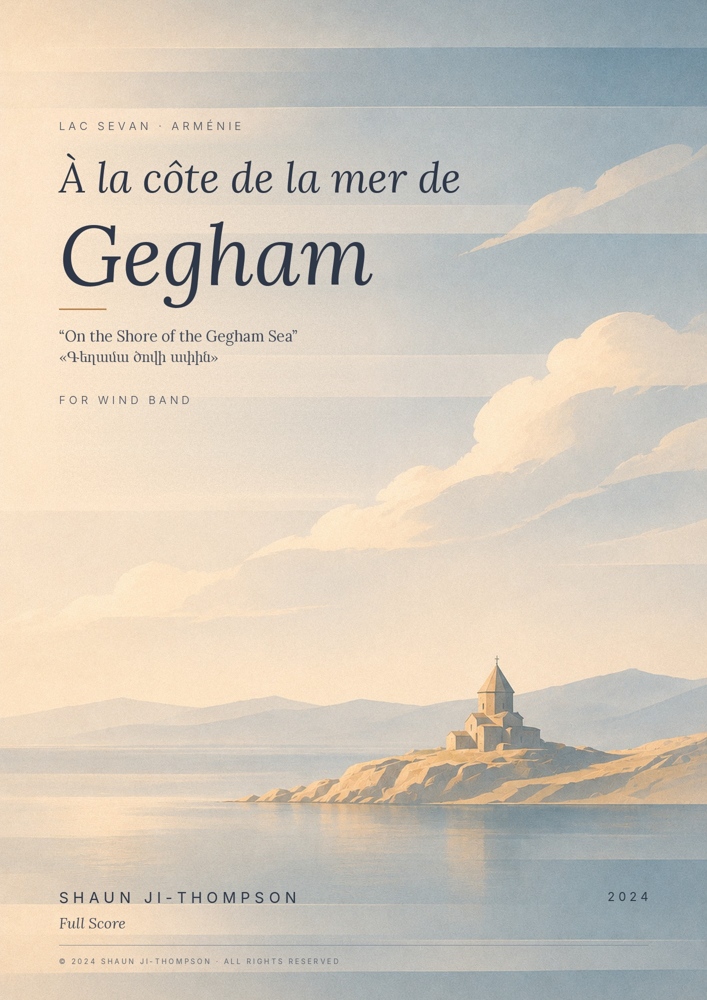
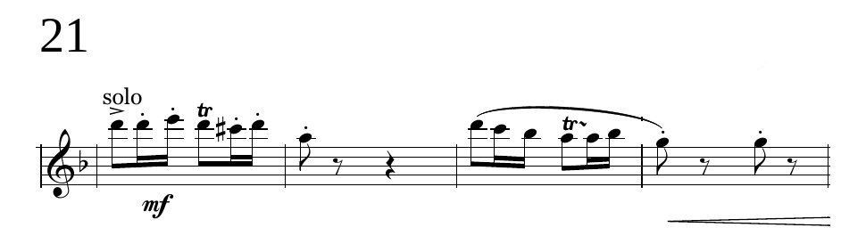
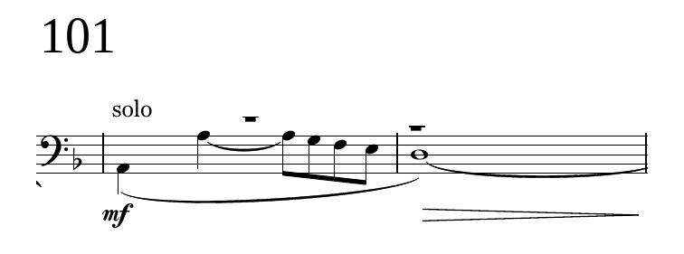
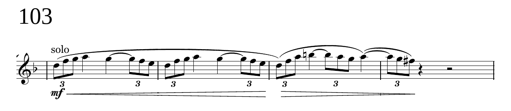
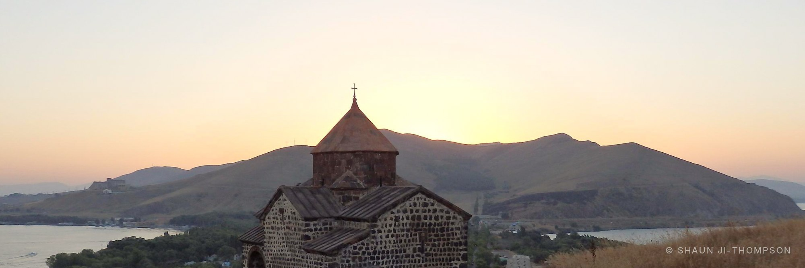

The inspiration
Lake Sevan, the Gegham Sea, lies about 1,900 metres up in the Armenian highlands. The piece opens with soft, free solo lines in the winds before the full band enters.

Preview: pages 1–2 of 12 (bars 1–39), for study only.
“On the Shore of the Gegham Sea”«Գեղամա ծովի ափին»
Digital rendition · Excerpt · bars [FROM–TO]
[Audio file to add]
The inspiration
Lake Sevan, the Gegham Sea, lies about 1,900 metres up in the Armenian highlands. The piece opens with soft, free solo lines in the winds before the full band enters.



For wind band
Piccolo
Solo flute
Flute I, II
Oboe I, II
Bassoon I, II
Solo clarinet in B♭
Clarinet in B♭ I, II
Bass clarinet
Solo alto
Alto I, II
Tenor
Baritone
Trumpet in B♭ I, II
Horn in F I, II
Trombone I, II
Bass trombone
Euphonium I, II
Tuba
Timpani
Triangle, bass drum, cymbals, tambourine
Glockenspiel

The journey · Armenia, 2015 Armenia, to the shores of Lake Sevan See the photo diary →